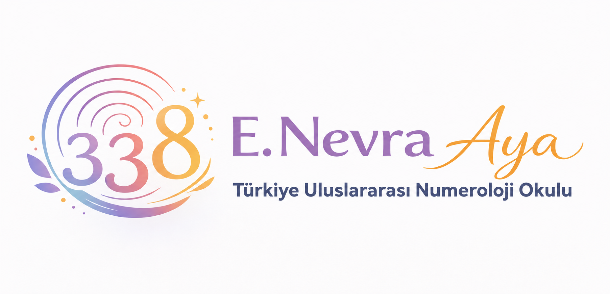
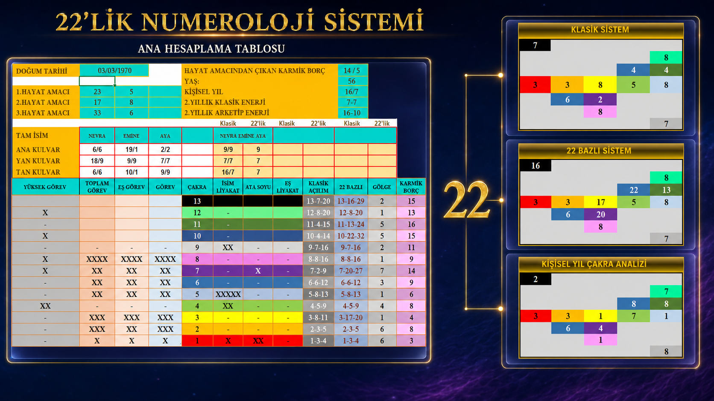

22 Arketip ve 13 Çakra ile Klasik Numerolojiyi Daha Derin Öğrenin
Sayıların yalnızca görünen anlamlarını değil; arketipsel karşılıklarını, gölge yönlerini, karmik eksenlerini, çakra frekanslarını ve yaşam döngülerindeki etkilerini birlikte okumayı öğrenin.

Kendi Arketipini Bul
İki farklı yoldan seçin: doğum tarihinizden Yıl • Ay • Gün enerjinizi çıkarın, ya da sadece doğum gününüzle hızlı bir bakış alın.
22'lik Numeroloji hesaplama yöntemi nasıl işler?
Kural: 1–22 arasındaki sayılar doğrudan korunur. Bir sayı 22'den büyükse, rakamları kendi içinde toplanır; sonuç hâlâ 22'den büyükse bu işlem sayı 22 veya altına inene kadar tekrarlanır.
Örnek: Doğum tarihi 3 Mart 1970, bakılan tarih 28 Temmuz 2026 olan biri için:
- Doğum günü (3) ve doğum ayı (3) zaten 22'den küçük olduğu için aynen alınır.
- Bakılan yılın (2026) rakamları toplanır: 2+0+2+6 = 10.
- Yıl enerjisi = 3 + 3 + 10 = 16 (22'den küçük, olduğu gibi kalır).
- Ay enerjisi = Yıl enerjisi (16) + bakılan ay (7) = 23 → 22'den büyük olduğu için rakamları toplanır: 2+3 = 5.
- Bakılan günün (28) rakamları toplanır: 2+8 = 10.
- Gün enerjisi = Ay enerjisi (5) + indirgenmiş gün (10) = 15.
Bu örnekte sonuç Yıl 16 • Ay 5 • Gün 15 olur ve her sayı, sistemdeki 22 arketipten birine karşılık gelir. Aşağıdaki araç bu hesaplamayı sizin için otomatik yapar.
Yıl enerjiniz doğum gününüz, doğum ayınız ve baktığınız tarihin yılından; ay ve gün enerjiniz bu yıl enerjisiyle birlikte hesaplanır. Varsayılan olarak bugünün tarihi seçilidir.
Örn: 23 Mart doğumluysanız "23" seçin. Herhangi bir hesaplama yapmanıza gerek yok.
Büyücü
Olumlu Yön
Gölge Yön
22'lik Numeroloji Nedir?
22'lik Numeroloji; klasik numerolojinin sayı bilgisini, 22 temel arketip ve 13 çakralı enerji haritasıyla bir araya getiren çok katmanlı bir yorumlama sistemidir. Doğum tarihi ve isim üzerinden elde edilen sayılar yalnızca tek bir sonuca indirgenmez; kişinin potansiyelleri, gölge alanları, karmik dersleri, şifa kapıları ve yaşam yönü bir bütün olarak değerlendirilir.
Bu yaklaşım klasik numerolojiyi reddetmez; onun temelini genişletir. Klasik sistemlerde yorum çoğunlukla 1–9 arasındaki sayılara indirgenirken, 22'lik Numeroloji yorum birimini 22 sayı üzerinden kurar. Böylece 10'dan 22'ye kadar olan sayıların özgün arketipsel anlamları korunur; her sayı kendi kimliği, dersi ve dönüşüm potansiyeliyle okunur.
Dokuz sayının içinde sıkışmayan; 22 ayrı arketip üzerinden insanın ruhsal, zihinsel, duygusal ve yaşamsal yapısını daha ayrıntılı okumayı amaçlayan bir sistemdir.
Arketipler, insanlığın ortak bilinç alanında tekrar eden temel yaşam örüntüleridir. Büyücü başlatma gücünü, İmparator düzen kurmayı, Âşıklar seçim ve ilişkiyi, Ölüm dönüşümü, Dünya ise tamamlanmayı anlatır. Her arketip kişide hem dengeli bir potansiyel hem de fark edilmesi gereken bir gölge alan taşıyabilir.
Sistemde Rider–Waite Tarot destesinin Büyük Arkana sembolleri, kehanet amacıyla değil; sayıların arketipsel dilini görünür ve hatırlanabilir hâle getiren sembolik anlatım araçları olarak kullanılır.
22 arketip, 13 çakralı sistem içinde yalnızca "hangi sayı?" sorusuna değil, "bu enerji kişinin hayatında nerede, nasıl ve hangi düzeyde çalışıyor?" sorusuna da cevap vermek için ele alınır.
- Çakralardaki ana potansiyeller ve gölge yönler
- Enerji akışını etkileyen blokaj ve kaldıraç noktaları
- Sonuç, gölge ve şifa sayıları arasındaki ilişki
- Karmik haneler ve atasoyu hatlarıyla bağlantılar
- Kişiye özel dengeleme, farkındalık ve uygulama alanları
Bu Eğitimde Neler Öğreneceksiniz?
Eğitim, hesaplamayı öğretmekle kalmaz; çıkan sayıların birbirleriyle nasıl konuşturulacağını ve bütünsel bir haritanın nasıl okunacağını gösterir.
22 Arketiple Derinleştirilmiş Okuma
- 1–9 yaklaşımını aşan 22 arketipli yorumlama
- Yalnızca 11, 22 ve 33 değil, tüm çift sayıların değerlendirilmesi
- Arketiplerin dengeli ve gölge çalışma biçimleri
13 Çakra Sistemi
- Çakra Merdiveni hesaplama ve enerji hiyerarşisi
- Çakra frekansları, gölge yönler ve kaldıraç noktaları
- Çakra–sayı ilişkisine göre potansiyel ve şifa yolları
Şifa ve Karmik Eksenler
- Şifa sayısını bulma ve blokaj kaynağını belirleme
- Sonuç, gölge, şifa ve karmik eksenlerin birlikte okunması
- Anne–baba hattındaki yeteneklerin ve tekrar eden döngülerin yorumlanması
Kader Yönü ve Yaşam Amaçları
- Ana, yan ve tam kulvarlar üzerinden kader yönü
- İkinci, üçüncü ve dördüncü yaşam amaçlarının kurulması
- Ruhsal yapı ile arketip frekanslarının ilişkilendirilmesi
İsim, Zaman ve Harita Okumaları
- 27 harf değeri ve çakra ilişkisiyle isim okuması
- Zirve, mücadele ve dönüşüm dönemleri
- Yıllık enerjiler, Gün–Yıl Haritası ve rüya analizi entegrasyonu
Eğitimin İşleyişi
Bu Eğitim Size Göre mi?
- Numerolojiyi temel seviyeden başlayarak sistemli biçimde öğrenmek isteyenler
- Mevcut numeroloji bilgisini 22 arketip ve 13 çakra yaklaşımıyla derinleştirmek isteyenler
- Danışmanlık, eğitim, kişisel gelişim veya şifa çalışmalarına yeni bir analiz aracı eklemek isteyenler
- Kendi potansiyellerini, gölge yönlerini, yaşam amaçlarını ve dönemsel döngülerini anlamak isteyenler
- İsim, doğum tarihi, atasoyu ve enerji haritasını birlikte yorumlamayı öğrenmek isteyenler
Emine Nevra Aya
Emine Nevra Aya
22'lik Numeroloji — Kurucu EğitmenUzun yıllar bankacılık sektöründe kurumsal iletişim yöneticisi olarak görev yaptıktan sonra numeroloji ve sayı temelli analiz sistemlerine yönelmiştir. Numeroloji alanında danışmanlık ve uygulamalı eğitim çalışmaları yürütmekte; ulusal ve uluslararası düzeyde değerli numerolog ve eğitmenleri Türkiye'deki öğrenciler ve şifacılarla buluşturmayı misyon edinmektedir.
Eğitim organizasyonu, sistem kurulumu ve uygulama odaklı program geliştirme alanlarında aktif çalışmalarını sürdürmektedir.
Örnek Bir 22'lik Numeroloji Haritası
Eğitimde öğrendiğiniz hesaplamalar sonunda ortaya böyle bir harita çıkar: hayat amaçları, kişisel yıl, çakra aksı, klasik ve 22'lik açılımlar bir arada okunur.

Görsel yalnızca örnek amaçlıdır; eğitimde kendi haritanızı adım adım çıkarmayı öğrenirsiniz.
22 Arketip
Aşağıdaki kartlar, 22'lik Numeroloji sistemindeki sayıların temel arketipsel yönünü tanıtmak amacıyla verilmiştir. Her arketip eğitim içinde olumlu potansiyeli, gölge ifadesi, karmik görevi ve çakralardaki çalışma biçimiyle daha ayrıntılı ele alınır.
Sık Sorulan Sorular
Tarot eğitimi mi?
Hayır. Rider–Waite Büyük Arkana görselleri burada kehanet amacıyla değil, sayıların arketipsel dilini açıklayan sembolik referanslar olarak kullanılır.
Klasik numerolojiden tamamen farklı mı?
Hayır. Klasik numerolojinin sayı temeli korunur; yorum alanı 22 sayı, 22 arketip ve 13 çakra sistemiyle genişletilir.
Daha önce numeroloji bilmek gerekir mi?
Program temel kavramları sistemli biçimde ele alacak şekilde düzenlenmiştir. Ön bilgisi olanlar ise mevcut çalışmalarını daha çok katmanlı hâle getirebilir.
Eğitim sonunda ne yapabilirim?
Kendi haritanızı ve öğrendiğiniz yöntemlerin kapsamı içinde başkalarının haritalarını daha bütünsel biçimde yorumlayabilir; sayı, arketip, çakra ve dönem analizlerini birlikte kullanabilirsiniz.
Dersleri sonradan izleyebilir miyim?
Evet. Ders kayıtları Telegram üzerinden izlenebilir; PDF ve ders notlarına süresiz erişim sağlanır. Kayıtlar indirilemez.
Sayıların Arkasındaki Arketipsel Hikâyeyi Keşfetmeye Hazır mısınız?
22 arketip ve 13 çakra üzerinden kendinizi, yaşam amaçlarınızı, gölge alanlarınızı ve dönüşüm yollarınızı daha derin okumak için 22'lik Numeroloji eğitimine katılın.